.jpg)
.jpg)
{kind=link}
f8c2.jpg?width=500&height=500&iframe=true){kind=link}
f8c2.jpg?width=500&height=500&iframe=true){kind=link}
Types of conservation measures
Certain conservation measures can reduce soil erosion. Soil / land management practices such as tillage and cropping practices, directly affect the overall soil erosion problem and solutions on a farm. When crop rotations or changing tillage practices are not enough to control erosion on a field, a combination of measures might be necessary. For example, contour plowing, strip cropping, or terracing may be considered.
- Agronomic: such as plant / soil cover, conservation farming methods, contour farming
- Vegetative: such as planting barriers (vegetative strips), live fences, windbreaks
- Structural: such as Fanya Juus, terraces, banks, bunds, cut off drains, barriers
- Overall management: such as area closures, selective clearing
For more examples and description of the conservation measures refer to coming sections.
Conservation agriculture
| 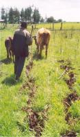 |
| Conservation tillage |
| (c) Ceris Jones, London, UK (Reproduced from WOCAT, www.wocat.net) |
| There are three major principles on conservation agriculture: minimal soil disturbance, permanent soil cover and crop rotations. Soils under conservation agriculture tend to improve their soil organic matter (SOM) content after applying the technology for certain years. SOM can be considered as the most important soil fertility and quality factor influencing other soil properties as infiltration, water holding capacity or soil structure. |
|
|
 | |
| Good ground cover protects the soil. | |
|
Keeping the soil covered is a fundamental principle of conservation agriculture. Crop residues are left on the soil surface to protect soil surface after harvesting. Additional cover crops may be needed if the gap is too long between harvesting one crop and establishing the next.
Cover crops improve the stability of the conservation agriculture system, not only on the improvement of soil properties but also for their capacity to promote an increased biodiversity in the agro-ecosystem.
Cover crops are beneficial as they:
- Stabilize soil moisture and temperature
- Protect the soil during fallow periods
- Mobilize and recycle nutrients
- Improve the soil structure and break compacted layers and hard pans
- Permit a rotation in a monoculture
- Can be used to control weeds and pests
- Produce additional soil organic matter and improve soil structure
Example: Cowpea (Vigna unguiculata) is an important grain legume throughout the tropics and subtropics. It has some properties which make it an ideal cover crop: It is drought tolerant and can grow with very little water. It can fix nitrogen and grows even in very poor soils. It yields eatable grains and can be used as an animal fodder rich in protein.
Cropping systems should be designed in such a way that the soil is almost permanently covered with plant canopy. In arable crops, careful timing of sowing and planting can help to avoid uncovered soil being washed away during the rainy season. After the main crop is harvested, a green manure crop may be sown. On slopes, crops should be grown in contour lines across the slopes (along the contour lines) rather than vertically.
This can contribute enormously to reduce the speed of surface water.
In conservation agriculture only minimal or no soil tillage should be applied. It involves crop seeding without mechanical seedbed preparation and minimal or no soil disturbance since the harvest of the previous crop (FAO, 2007).
| 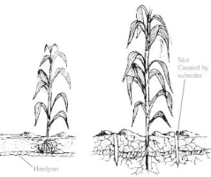 |
| Minimum tillage effects: Maize grows better where subsoiling and ripping have broken the hardpan (right) than previously (left) |
| (c) Reproduced from IIRR (www.iirr.org) |
Contour farming
Contour farming involves ploughing, planting and weeding along the contour, i.e, across the slope rather than up and down. Contour lines are lines that run across a (hill) slope such that the line stays at the same height and does not run uphill or downhill. As contour lines travel across a hillside, they will be close together on the steeper parts of the hill and further apart on the gentle parts of the slope.
Experiments show that contour farming alone can reduce soil erosion by as much as 50% on moderate slopes. However, for slopes steeper than 10%, other measures should be combined with contour farming to enhance its effectiveness.
Caution: If contour lines are incorrectly established, then they can actually increase the risk of erosion.
- Contour ridges are used mainly in semi-arid areas to harvest water, and in higher rainfall areas for growing potatoes.
- Trash lines made by laying crop residues or "trash" in lines along the contour. They slow down runoff and trap eroded soil, eventually forming terraces. However, the contour line can be destroyed by termites eating the trash.
- Grass barrier strips planted along the contour. They are planted with fodder grass such as Napier, or are left with natural grass. They are effective soil conservation measures on soils that absorb water quickly, and on slopes as steep as 30%.
| 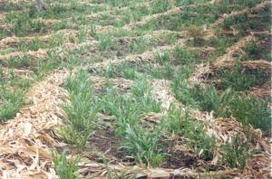 |
| Trashlines |
| (c) Berhanu Fentaw, Addis Ababa, Ethiopia (Reproduced from WOCAT, www.wocat.net) |
You may want to mark contour lines (level lines running across a slope) to decide where to plant barrier strips or lay trashlines. Helpful hints: Study the land first and visualize where the contour lines will run. This can be done best by one person directing another person in walking to the other side of the area to be contour such that he/she stays ath the same height as the first person.
| 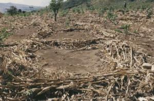 |
| Trash lines |
| (c) Hans Kruger (Reproduced from WOCAT, www.wocat.net) |
A-frames are a cheap and easy to make tool. They can be made from readily available materials and are easy to use.An A-frame consists of three pieces of wood, fixed together in the shape of a capital letter "A". The A-frame is held upright, and a weight on a string hangs down from the top of the "A" to act as a plumb-line. If the A-frame is on perfectly level ground, the string crosses the horizontal bar of the "A" at a certain point. This point is marked during calibration. To use the A-frame, it is "walked" across the slope, making sure that the two legs are level each time by checking if the string crosses the horizontal bar at the calibrated point. If not, the forward leg is moved until the string shows the frame is level. The position of the legs on the ground are marked with pegs, and then the frame is pivoted around to mark a new point on the slope.
Requirements
- Two straight wooden poles (1.5-2 m long), and one straight pole (1-1.5 m long).
- String, hammer, nails, pencil.
- A round stone.
Step 1: Making the A-frame
1. Use the poles and nails to make a frame in the shape of an "A" (Picture 1).
| 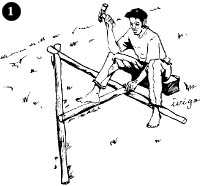 |
| (c) IIRR |
2. Tie one end of the string to the top of the "A".
3. Tie the stone to the other end of the string, so it hangs down just below the horizontal crossbar of the "A".
Calibrating the A-frame
4. Stand the A-frame upright on reasonably level ground. Mark on the ground where the two legs stand.
5. Hold the A-frame still, and use the pencil to mark lightly on the crossbar where the string crosses it (Picture 2).
| 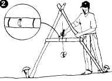 |
| (c) IIRR |
6. Turn the A-frame round, so that each leg stands exactly where the other had stood.
7. Make a second light mark on the crossbar where the string crosses it.
8. The two marks on the crossbar should be fairly close together. Halfway between them shows where the string would cross if the A-frame were standing on exactly level ground. Make a heavy pencil mark or notch the bar with a knife at this point (Picture 3).
| 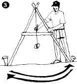 |
| (c) IIRR |
Step 2: Locate the contour lines using the A-Frame
1. Choose a place on the slope to begin. Stand the A-frame up and mark where the first leg stands with a peg or large stone.
2. Keeping the A-frame upright, and without moving the first leg, swing the second leg up or down the slope until the string crosses the crossbar exactly at the heavy pencil mark (Picture 4).
| 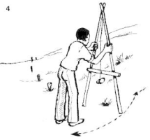 |
| (c) IIRR |
3. Mark where the second leg stands with another peg or stone.
4. Keeping the second leg in the same place, lift the first leg up and pivot it around. Move it up and down the slope until you find the place where the string crosses the crossbar at the heavy pencil mark.
5. Mark where the first leg is now standing with another peg or stone.
6. Continue in this manner to the end of the field.
7. The line of pegs or stones will mark a contour line: they will all be at the same height on the slope. The pegs are usually not in a straight line. If necessary, make a smooth curve by moving them a little up or down.
8. To mark another contour line, move up or down the slope a certain distance - usually about 20 m (20 paces) on a gentle slope, or a drop of 1.5 m on steeper slopes. Repeat the process from Step 9 above onwards.
Step 3: Prepare the contour lines:
After finding and marking the contour lines, prepare them until ready for planting. The width of each area to be prepared should be one meter. The stakes will serve as guide during plowing.
Step 4: Plant seeds of nitrogen-fixing trees and shrubs
On each prepared contour line, two furrows are laid out. Plant two to three seeds per hill at a distance of about 0.6cm. Cover the seeds firmly with soil. When fully grown, the hedgerows bank the soil and serve as source of fertilizer. Example of hedgerow species are desmodium (Desmodium sp.) and leucaena (Leucaena leucocephala).
Drains, ditches, broadbeds and furrows, terraces
Cutoff drains:
Cutoff drains are dug across a slope to intercept surface runoff and carry it safely to an outlet such as a canal or stream. They are used to protect cultivated land, compounds and roads from uncontrolled runoff, and to divert water from gully heads.
Retention ditches
These ditches are dug along the contour. They catch and retain incoming runoff and hold it until it seeps into the ground. They are an alternative to cutoff drains when there is no nearby waterway to discharge the runoff into. They are often used to harvest water in semi-arid areas.
Infiltration ditches
Infiltration ditches are one way of harvesting water from roads or other sources of runoff. They consist of a ditch, 0.7-1.5 m deep, dug along the contour, upslope from a crop field. Water is diverted from the roadside into the ditch, which is blocked at the other end. Water trapped in the ditch seeps into the soil. On soils with an impervious layer (such as a hardpan) below the surface, the water does not sink straight down into the soil. Instead, it moves downslope just below the surface, towards the crops in the field below.
| 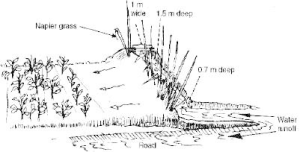 |
| Infiltration ditch |
| (c) IIRR |
Broadbeds and furrows
In a broadbed-and-furrow system, runoff water is diverted into field furrows (30 cm wide and 30 cm deep). The field furrows are blocked at the lower end. When one furrow is full, the water backs up into the head furrow and flows into the next field furrow. Between the field furrows are broad beds about 170 cm wide, where crops are grown.
| 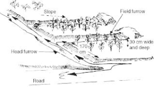 |
| Broadbed and furrow |
| (c) IIRR |
Fanya juu
Fanya juu terraces are constructed by digging ditches and heaping the soil, forming bunds in the upper sides of the ditches. Between the ditch and the bund a small ledge prevents the soil from sliding back. Spacing depends on slope and soil depth.
| 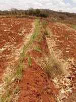 |
| Fanya juu bund in maize field after harvest. Note napier grass strip on upper part of bund, and maize trash in ditch below. |
| (c) Hanspeter Liniger, WOCAT |
| 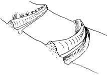 |
| New fanya juu terrace |
| (c) IIRR |
| 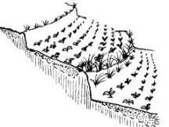 |
| Fanya juu - Same terrace after 5 years |
| (c) IIRR |
| 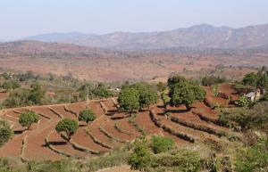 |
| Fanya juu terraces in a semi-arid area which have developed over time into benches. Note the well established grass strips along the bunds. |
| (c) Hanspeter Liniger, WOCAT |
Fanya chini
A fanya chini is like a fanya juu, except that the soil is put on the lower side of the contour trench, not on the upslope side of it (as in a fanya juu). Fanya chini are used to conserve soil and divert water. The resulting embankment can be used to grow fodder. Fanya chini are easier to make than fanya juu, but they do not lead the formation of a bench terrace over time. They can be used on slopes up to 35%.
Agroforestry
Agroforestry describes land use systems where trees are grown in association with agricultural crops pastures or livestock - and there are usually both ecological and economic interactions between components of the system. Farmers have practised agroforestry for years. Agroforestry focuses on the wide range of working trees grown on farms and in rural landscapes. Among these are fertilizer trees for land regeneration, soil health and food security; fruit trees for nutrition; fodder trees that improve smallholder livestock production; timber and fuelwood trees for shelter and energy; medicinal trees to combat disease; and trees that produce gums, resins or latex products. Many of these trees are multipurpose, providing a range of benefits. Proven impacts of agroforestry:
- Reducing poverty through increased production of agroforestry products for home consumption and sale.
- Contributing to food security by restoring farm soil fertility for food crops and production of fruits, nuts and edible oils.
- Ensuring, through negotiation support, a fairer deal for women farmers and other less-advantaged rural residents whose rights to land are insecure.
- Reducing deforestation and pressure on woodlands by providing fuelwood grown on farms.
- Increasing diversity of on-farm tree crops and tree cover to buffer farmers against the effects of global climate change.
- Improving nutrition to lessen the impacts of hunger and chronic illness associated with HIV/AIDS.
- Augmenting accessibility to medicinal trees, the main source of medication for 80% of Africa's population.
Vegetative strips / cover:
Grasses or trees can be used as vegetative strips or cover in various ways. Vegetative strips can be planted to catch soil, excess nutrients, and chemical pesticides moving over the land's surface before they enter waterways. Strips often lead to the formation of bunds or terraces due to "tillage erosion" - the downslope movement of soil during cultivation. The effect of dispersed vegetative cover is multiple, including increasing ground cover, improving soil structure and infiltration, as well as decreasing erosion by water and wind.
For more information on agroforestry click here
Conservation / regeneration measures
Land use change, area closure and rational grazing
Management measures are often applied to grazing land in situations where uncontrolled use has led to degradation and where other measures simply do not work without a fundamental change in land management. Enclosures, thus protection from grazing, allow regeneration of vegetation cover. Such measures are often essential for the rehabilitation of badly degraded areas where technical measures and other interventions are not adequate on their own (but can act in a supplementary way). But there are also examples of intensification of grazing land use where fodder crops are planted and used for cut-and-carry feeding of livestock.
One of the major advantages of management measures is that they often do not involve very high investments of money or labour. On the other hand, taking land out of use can lead to increased pressure on neighbouring land, which may also be in poor condition and vulnerable to further degradation. Another disadvantage is that management measures are often not clear-cut; they require great flexibility and responsiveness, not only initially, but over the years that follow. However, there are often implications for land tenure that can complicate decision-making and may sour relationships between neighbours (WOCAT, 2007).
| 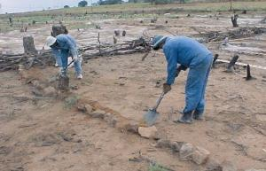 |
| Reabilitation of degradeded rangeland in its initial stage: stone lines are established after the area has been cleared of invasive tree species (South Africa) |
| (c) Anuschka Barac
|
| 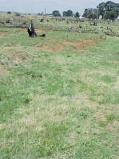 |
| Oversowing with grass seeds, manuring with cattle dung and applications of lime speeds up regeneration of the grass cover (South Africa) |
| (c) Anuschka Barac
|
| 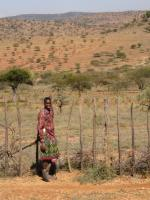 |
| Makurian protected area - fencing and water harvesting trenches (Kenya) |
| (c) H.P.Liniger
|
Information Source Links
- ATTRA National Sustainable Agriculture Information Service. Agroforestry: an overview. Alice E. Beetz, Published 2002, Updated 2011, NCAT, IP155, 20 pages. www.attra.ncat.org
- FAO-Food and Agriculture Organization of the United Nations, Agriculture and Consumer Protection Department, Conservation Agriculture. 2007. www.fao.org
- IFOAM Training Manual on Organic Agriculture in the Tropics
- International Institute of Rural Reconstruction (IIRR). Sustainable Agriculture Extension Manual. Available at www.iirr.org. Accessed on 13.8.2007
- Karl Herweg, (Education material): Managing Soil Fertility in the Tropics (Vol. 1-4)
- LADA - Land Degradation Assessements in drylands. 2002. www.fao.org
- Land and Plant Nutrition Management Service. FAO-AGL 2002, MADS-SEA Network www.fao.org
- Oldeman L.R., Hakkeling R.T.A., Sombroek W.G. (1990) World map of the status of human induced soil degradation. An explanatory note. International Soil Reference and Information Centre, Wageningen, The Netherlands.
- Soil Erosion Site: www.soilerosion.net
- WOCAT (2007). where the land is greener - case studies and analysis of soil and water conservation initiatives worldwide. Editors H.P. Liniger and W. Critchley. CTA, FAO, UNEP and CDE, University of Bern.
- WOCAT - Sustainable Land Management in Practice - Guidelines and Best Practices for Sub-Saharan Africa (2011)
- WOCAT - World Overview of Conservation Approaches and Technologies. www.wocat.net